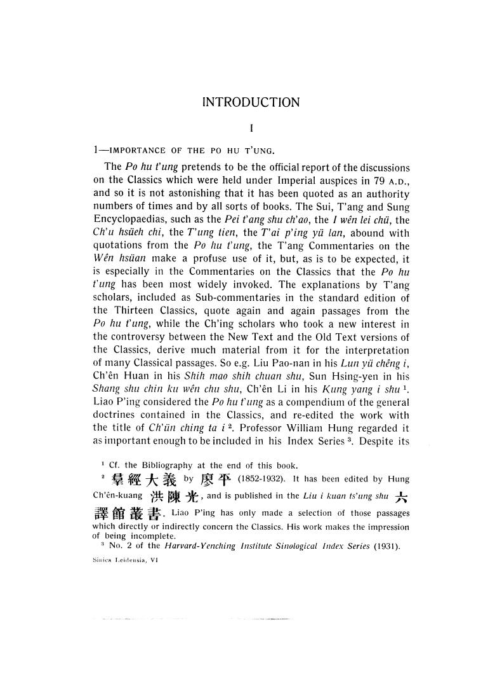
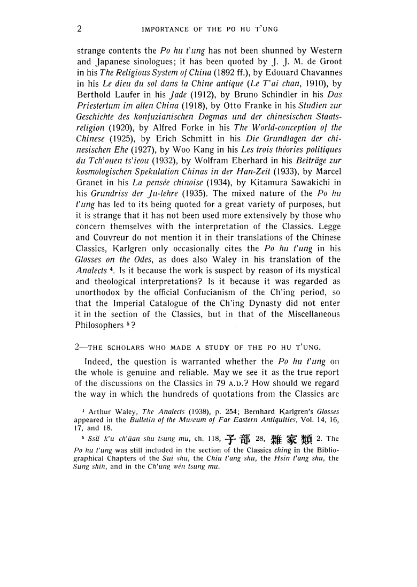
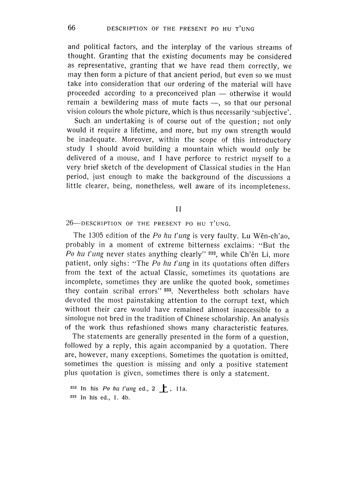

<div1 type="part">
<pb/>
<head>INTRODUCTION</head>
<div2 type="chapter" n="I">
<head>I</head>
<div3 type="section" n="1">
<head>1—IMPORTANCE OF THE PO HU T'UNG.</head>
<p>The <i>Po hu t'ung</i> pretends to be the official report of the discussions <lb/>
on the Classics which were held under Imperial auspices in 79 A.D., <lb/>
<!-- div3 continues -->
</div3>
<div3 type="section" n="2">
<head>2—THE SCHOLARS WHO MADE A STUDY OF THE PO HU T'UNG.</head>
<p>Indeed, the question is warranted whether the <i>Po hu t'ung</i> on <lb/>
the whole is genuine and reliable. May we see it as the true report <lb/>
<!-- etc. -->
</div3>
</div2>
<div2 type="chapter" n="II">
<head>II</head>
<div3 type="section" n="26">
<head>26—DESCRIPTION OF THE PRESENT PO HU T'UNG.</head>
<p>The 1305 edition of the <i>Po hu t'ung</i> is very faulty. Lu Wên-ch'ao, <lb/>
probably in a moment of extreme bitterness exclaims: "But the <lb/>
<!-- etc. -->
</div3>
</div2>
</div1>